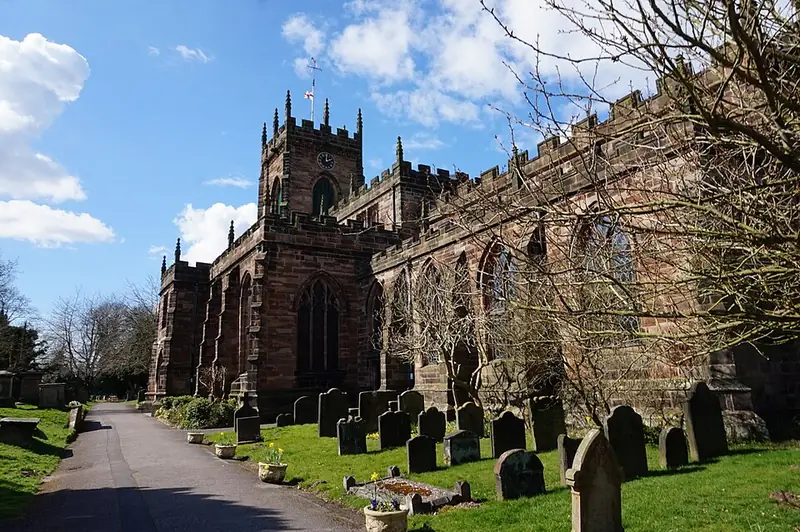

Your first Sunday
Holy Communion starts at 10:30 and usually finishes between 11:30 and 12. It follows the Church of England's Common Worship, with the organ and a mix of traditional and modern hymns.
You don't need to know what to do or when to stand. Come in, sit wherever you like, and follow along with the words on the screens. Children are welcome.
On the third Sunday of the month the pattern changes, so check the parish Facebook page for that week.
More about Sundays

Find a grave
Find someone remembered here. Search names, discover family connections and see where a memorial lies in the churchyard.
3,576 people recorded
2,130 graves on the churchyard plan
Powered by Gravefindr
800 years at the heart of Penkridge
Every one of those graves lies beside a church that is older still. The present building has been standing for
about 800 years.
It was begun in the late 1220s, when Henry de Loundres, Archbishop of Dublin and Dean of Penkridge, pulled down the old Saxon minster and started a great new collegiate church. The count runs from St Michael's Day, 29 September 1226.
Its 13th-century arcades, the east window opening of about 1340 and the alabaster tombs of the Littleton family are all still here. The church was restored in 1881 and is listed Grade I.
Read the full history